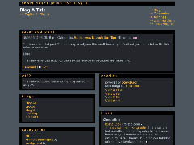

Skin Name: l33t Gray 2.0 Description: l33t Gray 2.0 is an update to the popular l33t Gray skin originally created by Tara Chen. This has now been made to work with widgets by Brinley Ang for b2evolution version: 2.x